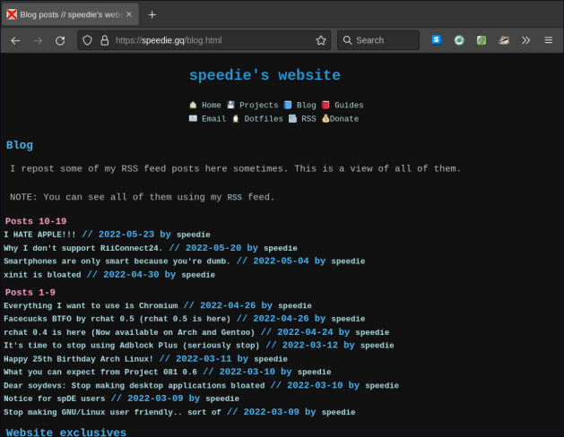

MagmaBoar is a Firefox profile optimized to provide privacy and freedom while browsing the web. Unlike other options such as GNU IceCat, Because MagmaBoar is just a Firefox profile, it can easily be modified and used with more modern versions of the web browser.
The MagmaBoar Firefox profile comes with many tweaks (see prefs.js) and extensions which prevents spyware from running in your browser.
Here's a list of extensions:
You can check websites like deviceinfo.me which are designed to test your browser's privacy settings.
First, make sure to install Firefox using your favorite package manager on GNU/Linux.
Then cd ~/.mozilla/firefox/*.default-release. Delete everything in this directory.
Download the tar.gz and unpack it using tar xpf /path/to/tar.gz ; cd magmaboar.
Finally, copy the contents to ~/.mozilla/firefox/*.default-release. If it isn't enabled, type in about:profile and set it as default.
You can download the latest tar.gz below!
You can create issues on the GitHub repository here.
If this Firefox profile was useful to you, consider sending a small donation.